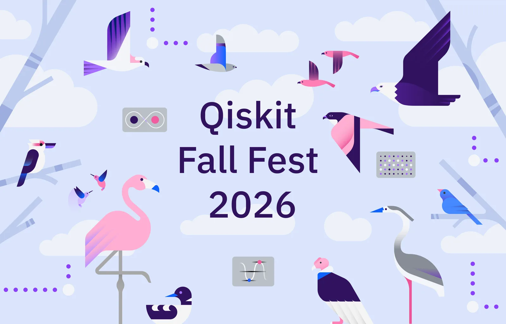

Breakfast
Arrive, settle in, and meet fellow participants before registration.
HospitalityQuantum Day · 24 October 2026
Five circuit wires track a ten-hour journey from first arrival to final lab visit. Scroll to move the measurement pulse through the day.
Measurement pulse · tied to your scroll

Published programme
Times are shown in Malaysia Time (MYT, UTC+8). The committee may refine operational details closer to the event.
Arrive, settle in, and meet fellow participants before registration.
HospitalityCheck in at ICC and prepare for the opening session.
ArrivalWelcome from the Deans of the Faculty of Computing and Faculty of Science, followed by the opening ceremony.
CeremonyA short reset before the community session begins.
BreakConnect across disciplines, share your starting point, and form the groups for the day.
CommunityTalks by Dr. Yap Yung Szen and Ts. Dr. Nur Haliza Abdul Wahab.
TalkThe student committee maps the learning journey, logistics, and goals for the day.
BriefingBuild your first practical layer of quantum circuit understanding.
Hands-onRecharge, talk with participants, and explore the exhibition.
HospitalityHear student perspectives, projects, and routes into quantum learning.
CommunityIntroduce future initiatives and the student-led structure that continues after Fall Fest.
CommunityExtend the morning circuit work and consolidate the practical journey.
Hands-onClose the formal programme and recognise the people who made it possible.
CeremonyVisit AQSolotl and the Quantum Lab in UTM's Department of Physics.
Lab visitThe event concludes; the student community's next orbit begins.
CompletePrepare your state
Both interactive Qiskit sessions are designed for hands-on participation.
Create your cloud account before arriving so the practical sessions can start smoothly.
Bring your student ID and arrive before 08:30 for breakfast and check-in.
The programme is designed for beginners across computing, science, and other fields.